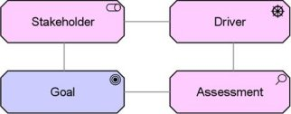

The Stakeholder viewpoint allows the analyst to model the stakeholders, the internal and external drivers for change, and the assessments (in terms of strengths, weaknesses, opportunities, and threats) of these drivers.
| Stakeholders | Stakeholders, business managers, enterprise and ICT architects, business analysts, requirements managers |
| Concerns | Architecture mission and strategy, motivation |
| Purpose | Designing, deciding, informing |
| Abstraction Level | Coherence, Details |
| Layer | Business, Application, and Technology layers |
| Aspects | Motivation |
Concepts and Relations
